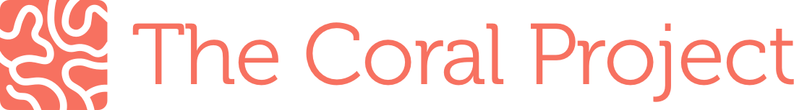

This is a work in progress. Some sections are missing/incomplete
The Coral Project is an open source project to help publishers of all sizes build better communities around their journalism.
We believe that if journalism is going to remain relevant and connected to the needs of people who live in a democracy, journalists need to do a better job of listening, validating, factchecking, and responding to experiences, opinions, and ideas.
To do this, we need better tools that make everyone feel safe, respected, and heard. We need to focus our resources on identifying positive contributions as well as making negative ones less prominent.
To achieve these goals, we are:
- creating open source software, and
- creating, refining and disseminating practices, tools, and studies
Core code principles
In order to serve communities of varying shapes and sizes, all Coral Project software is conceived from the ground up to be:
- Configurable: We strive to use configuration to deliver as much business logic, data modeling, and other aspects of our systems as is practical. Doing so gives us the ability to quickly configure precise UI experiences, data structures, and data science analysis with minimal need for coding, upgrades, server work, etc. Ultimately, we want the community managers who run our software to feel like they are designing their own house. This means trying things to see how they feel, looking at the results, and quickly making changes based on what they learn. We take our inspiration from the ever-changing, adaptable ecosystems of coral reefs.
- Modular: Coral products can be used together to form a fully functioning community platform, or be used in pieces to complement existing software. In order to accomplish this, we are building core API features, message passing and import/export strategies in everything we do. We are also refining, documenting, and publishing deployment strategies for each of our products both in isolation as well as together as groups of our products configured to work in concert.
- Privacy Minded: There is an implicit act of trust involved in registration for and engagement in an online community. Maintaining that trust is a top priority for us. Privacy for us begins with security concerns, and stretches deep into our product thinking. Whenever information is entered into our systems, we want to make it clear who will be able to see that information and how it will be used. We want to build safe, comfortable places that allow for conversations of varying levels of exposure, without false expectations or nasty surprises.
- Secure, Stable and Scalable: Our deployment recommendations, if followed, provide usable and secure environments. Each piece of our software has internal checks to catch any error states and trigger alarms, as well as external restart mechanisms. All of our platforms have proven records for stability and well-known upgrade paths. We will publish auto-scaling deployment workflows where appropriate for large sites with varying loads.
What’s going on and how can I get involved?
We are still actively developing this open presence and we always looking for contributions. We want to build this project with all of you.
Under the hood
Coral products are based on the following technologies:
You can use Docker Compose to quick start the Coral System or read more about how the whole ecosystem and each of its pieces work.
For more information about us and to see our blog, please visit our website and sign up to our newsletter. We are also on Twitter.
The Coral Project is a collaboration between The Mozilla Foundation, The New York Times, and The Washington Post, and is funded by a grant from The John S. and James L. Knight Foundation.